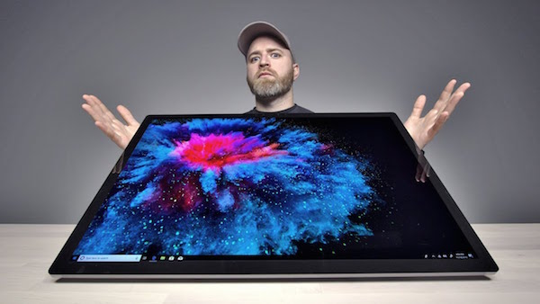
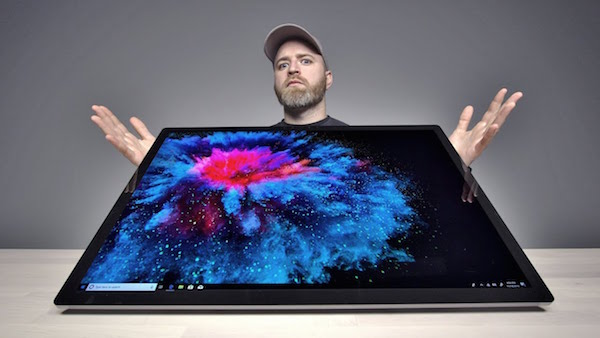
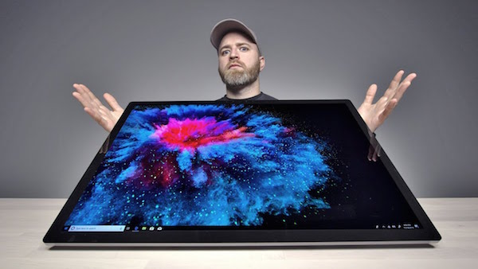

A Microsoft anunciou a chegada do novo Surface Studio 2, o mais poderoso da linha apresentado até agora. O dispositivo mantém a tela de 28 polegadas do antecessor, mas ganhou incrementos significativos no que toca as suas especificações: agora, ele está equipado com SSD de 2 TB, processador Intel Core i7 de sétima geração placa NVIDIA com tecnologia Pascal, 50% mais rápida do que a versão anterior.
Por fora não há muito o que conferir, já que eles mantiveram praticamente o mesmo design e funcionalidades da versão original, inclusive seu inovador mecanismos que permite transformar o All-in-One da Microsoft uma grande mesa de desenho digital. As principais mudanças de fato foram internas, com atualização de componentes diversos e melhorias no processo produtivo.
Sua tela de 28 polegadas foi atualizada com “um novo material de cristal líquido” que a Microsoft alega ter resultados em pretos mais profundos. Ela será ajudada por um processador Intel de 7ª geração para uma computação mais poderosa.
O interessante é que diferente do Surface Laptop 2, a mais nova versão do Surface Studio ganhou uma entrada USB-C, o que deixará a maioria dos seus compradores super felizes.
